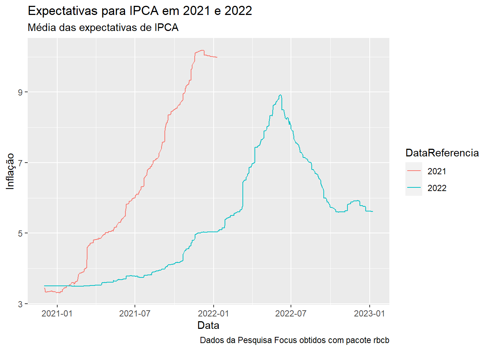
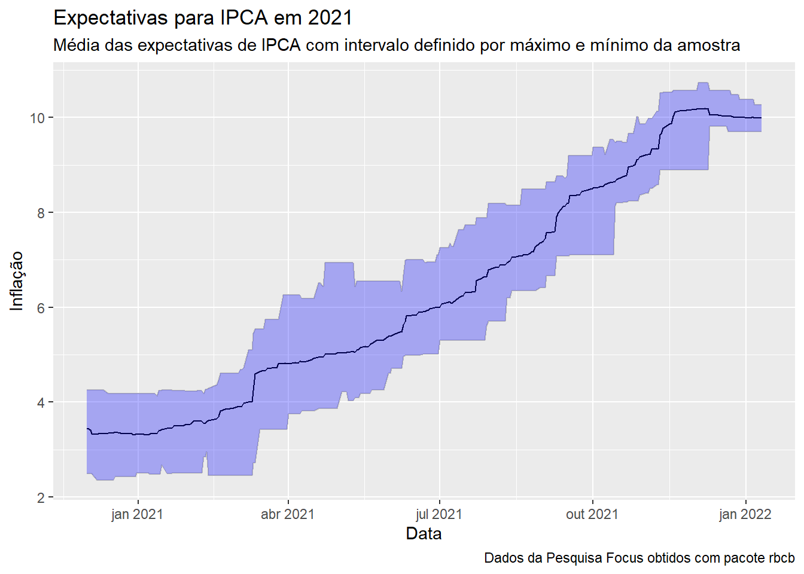

library(dplyr)
library(ggplot2)
library(rbcb)É possível obter as expectativas de mercado para diversos indicadores macroeconômicos da pesquisa Focus de forma totalmente automática utilizando o R.
Vamos utilizar o pacote {rbcb} para obter estes dados. O pacote {rbcb} é uma interface para algumas das diversas APIs do portal de dados abertos do Banco Central (link).
As expectativas de mercado para os indicadores macroeconômicos da pesquisa Focus são consolidadas em estatísticas diárias e divulgadas na API. Estas estatísticas são calculadas com base nas expectativas de mercado de diversos bancos, gestores de recursos e demais instituições do mercado financeiro. Os indicadores macroeconômicos são referentes a índices de preços, crescimento do PIB e da produção industrial, taxa de câmbio, taxa Selic, variáveis fiscais e indicadores do setor externo e são publicadas todo primeiro dia útil da semana.
Carregando os pacotes utilizados.
Função get_market_expectations
A função get_market_expectations implementa a interface para a API de expectativas de mercado da pesquisa Focus. Vejamos os seus argumentos e o que podemos fazer com eles:
get_market_expectations |> args()function (type = c("annual", "quarterly", "monthly", "inflation-12-months",
"top5s-monthly", "top5s-annual", "institutions", "selic",
"top5s-selic"), indic = NULL, start_date = NULL, end_date = NULL,
keep_names = TRUE, ...)
NULLtype: A API de expectativas possui diversos endpoints e o argumentotypedefine qual deve ser utilizado. Se não for informado o valorannualserá utilizado.annual,quarterlyemonthlyretorna, respectivamente, as expectativas anuais, trimestrais e mensais dos indicadores macroeconômicosinflation-12-monthspara expectativas de inflação nos próximos 12 mesestop5s-monthlyetop5s-annualretorna as expectativas mensais e anuais para os indicadores do Top 5institutionsexpectativas informadas pelas instituições credenciadasselicexpectativas de mercado SELICtop5s-selicexpectativas Top 5 para SELIC
indicnome do indicador macroeconômico, é opcional, de forma, quando não for definido, todos os indicadores disponíveis para o endpoint serão retornados. Esse ponto é curioso, pois a documentação não é boa e informa indicadores que não são mais disponibilizados.start_dateeend_datedefinem as datas de início e fim para a consulta, são opcionais e caso não sejam informados, todo o período será retornado, o que não é recomendado pois onera os serviços de dados do BCB que já não são lá os melhores.keep_namesé um argumento utilizado internamente que não faz diferença para o usuário final....aqui são passados argumentos adicionais para a API$selectdefine as colunas retornadas na consulta:Nome, Idade$filterdefine filtros mais elaborados baseado nos valores das colunas:Nome eq 'João'$orderbydefine como as colunas devem ser ordenadas:Nome asc, Idade desc$skipdefine quantidade de linhas no começo que não devem ser retornadas$topdefine a quantidade de linhas que serão retornadas
Conhecendo os valores retornados
Cada endpoint possui o seu conjuto de colunas retornadas e isso pode mudar com o tempo, dessa maneira, para conhecer cada API, eu recomendo fortemente que a opção $top = 10 seja utilizada para limitar uma consulta inicial para conhecimento dos valores retornados.
get_market_expectations("annual",
indic = "IPCA",
`$top` = 10
) |>
rmarkdown::paged_table()Como vemos, tem muito NA. Talvez seja por que estamos visualizando dados muito antigos, vamos reordenar para trazer os dados mais recentes. Para isso é necessário definir a opção $orderby.
get_market_expectations("annual",
indic = "IPCA",
`$top` = 10,
`$orderby` = "Data desc"
) |>
rmarkdown::paged_table()Já ficou melhor, já é possível entender as informações retornadas.
Realizando uma consulta mais elaborada
Podemos definir melhor a consulta e o que queremos dela:
- retornar as colunas: Data, DataReferencia, Media, Mediana, Maximo, Minimo e DesvioPadrao. Para isso vamos utilizar a opção
$select. - filtrar
baseCalculoigual a 0 eDataReferenciaigual a 2021 ou 2022 com a opção$filter. - Com data inicial igual a 2020-12-01, para pegar os dados desde dezembro de 2020
df <- get_market_expectations("annual",
indic = "IPCA",
start_date = "2020-12-01",
`$filter` = "(DataReferencia eq '2021' or DataReferencia eq '2022') and baseCalculo eq 0",
`$select` = "Data,DataReferencia,Media,Mediana,DesvioPadrao,Maximo,Minimo"
)
df |>
head() |>
rmarkdown::paged_table()Visualizando os dados
Com as estatísticas de expectativas de IPCA carregadas podemos começar a visualização dos dados. Estas expectativas são referentes a inflação cheia para os anos de 2021 e 2022 (DataReferencia). O filtro baseCalculo igual a 1 refere-se ao prazo de validade das expectativas informadas. Esta coluna pode ser 0 ou 1. baseCalculo igual a 0 considera as expectativas informadas nos últimos 30 dias no cálculo das estatísticas e baseCalculo igual a 1 considera os últimos 4 dias. Foi escolhida baseCalculo igual a 0 por ter uma amostra maior, consequência do período maior.
Série temporal das expectativas de IPCA
Vamos começar observando a série temporal das expectativas para cada DataReferencia.
df |>
ggplot(aes(x = Data, y = Mediana, group = DataReferencia, colour = DataReferencia)) +
geom_line() +
labs(
title = "Expectativas para IPCA em 2021 e 2022",
subtitle = "Média das expectativas de IPCA",
caption = "Dados da Pesquisa Focus obtidos com pacote rbcb",
x = "Data", y = "Inflação"
)
Curioso ver como as expectativas de inflação para 2021 mudaram ao longo de 2021, ou seja, erra-se miseravelmente. As expectativas para 2022 mudam menos, bem, isso até virar o ano.
Série temporal com intervalo informado
Vamos olhar agora apenas a DataReferencia 2021 e colocar as linhas de máximo e mínimo para termos uma ideia de intervalo para as expectativas.
df |>
filter(DataReferencia == 2021) |>
ggplot(aes(x = Data)) +
geom_line(aes(y = Mediana), colour = "black") +
geom_line(aes(y = Maximo), colour = "grey") +
geom_line(aes(y = Minimo), colour = "grey") +
geom_ribbon(aes(ymin = Minimo, ymax = Maximo), fill = "blue", alpha = 0.3) +
labs(
title = "Expectativas para IPCA em 2021",
subtitle = "Média das expectativas de IPCA com intervalo definido por máximo e mínimo da amostra",
caption = "Dados da Pesquisa Focus obtidos com pacote rbcb",
x = "Data", y = "Inflação"
)
Interessante ver como as pesquisas erram e como, mesmo os mais ousados, não saem muito do consenso. Entendo que esse é um mecanismo necessário para se colocar o “bode na sala”, e ntretanto, erra-se miseravelmente, são muitos vieses envolvidos.